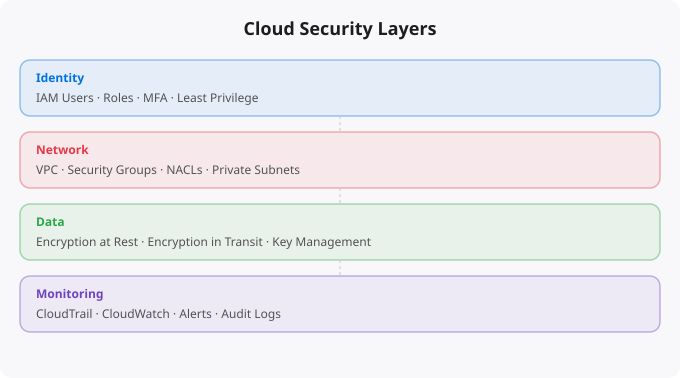

Cloud Security for Non-Security People

Security in the cloud is not just a job for the security team. Every developer who deploys code, every engineer who configures infrastructure, every analyst who accesses data — all of them make security decisions every day, often without realizing it. Understanding the basics of cloud security is no longer optional for anyone working in technology.
This article is written for the developer who thinks security is someone else's job, the student learning cloud who skips the IAM section, and the professional who is not sure what least privilege actually means in practice. By the end, you will have a solid mental model of how cloud security works and what you personally need to pay attention to.
Why Cloud Security Is Different
In the old world of on-premises servers, security was largely physical. Put the servers in a locked room, control who gets access to the building, and you have covered a significant portion of your security perimeter. The attack surface was limited because the systems were physically isolated.
Cloud changes everything. Your infrastructure is now accessible from anywhere on the internet. Your data is stored in shared data centers. Your services communicate over public networks. The configuration of your infrastructure is done through APIs and web consoles that are also accessible from anywhere. This does not make cloud less secure — in many ways, cloud providers have better physical security, more sophisticated monitoring, and more rigorous processes than most companies could afford on their own. But it does mean that the security responsibility shifts. The cloud provider secures the underlying hardware and network. You are responsible for everything you build and configure on top of it. AWS calls this the Shared Responsibility Model.
Identity and Access Management — The Most Critical Topic
IAM (Identity and Access Management) is where most cloud security breaches begin. More data breaches in cloud environments are caused by misconfigured permissions than by sophisticated attacks. Understanding IAM basics is the single most important security skill for non-security cloud users.
The core concept is simple: every action in the cloud is performed by an identity — a user or a service — and every identity has a set of permissions defining what it is allowed to do. IAM is the system that manages these identities and permissions. The golden rule of IAM is least privilege: every identity should have exactly the permissions it needs to do its job, and nothing more. If your application only reads from an S3 bucket, its service account should only have read access to that specific bucket — not write access, not access to other buckets, not access to any other AWS services.
Common mistakes that create security vulnerabilities: using the root account for daily tasks (never do this), creating IAM users with administrator permissions when they only need specific access, using long-lived access keys that never rotate, sharing credentials between services or people, and not enabling multi-factor authentication (MFA) on privileged accounts.
Data Security: Encryption at Rest and in Transit
Data security in the cloud has two primary dimensions: protecting data while it is stored (at rest) and protecting data while it is moving between systems (in transit). Encryption at rest means your data is stored in an encrypted format on disk. Even if someone physically accessed the storage media, they would not be able to read your data without the encryption keys. Most cloud storage services offer encryption at rest by default or with a simple configuration option. Enable it. Always.
Encryption in transit means your data is encrypted as it travels over the network. This is what HTTPS provides for web traffic. For internal service-to-service communication in the cloud, use TLS everywhere. Never transmit sensitive data over unencrypted connections, even within a private network. Key management is critically important. Your encryption is only as strong as the protection of your encryption keys. Cloud providers offer dedicated key management services — AWS KMS, Google Cloud KMS, Azure Key Vault — that store keys securely and control who can use them. Use these services instead of managing keys yourself in application code or configuration files.
Network Security: VPCs, Security Groups, and Private Subnets
When you deploy resources in the cloud, you can control the network environment they run in through Virtual Private Clouds (VPCs) — isolated network environments that you define and control. Public subnets are network segments where resources can directly communicate with the internet. Private subnets are where your databases, internal services, and sensitive components should live — they cannot receive direct inbound traffic from the internet.
Security groups act as firewalls for your cloud resources. They define what traffic is allowed in and out. A common mistake is opening security groups too broadly — for example, allowing SSH access from 0.0.0.0/0 (all IP addresses) to your servers. This is almost never necessary and creates significant exposure. Always restrict access to specific IP ranges or specific other security groups.
Monitoring and Logging
One of the most powerful security capabilities of the cloud is the ability to log and monitor everything. Cloud providers capture detailed audit logs of every API call, every authentication event, every resource change. Enable audit logging from day one. In AWS, this is CloudTrail. In GCP, it is Cloud Audit Logs. In Azure, it is Azure Monitor and Activity Log. Configure alerts for suspicious activity: root account usage, IAM policy changes, security group modifications, failed authentication attempts. Set up centralized log storage and make sure logs cannot be deleted or modified by the accounts they are monitoring.
Common Security Mistakes and How to Avoid Them
S3 bucket misconfigurations have caused some of the largest data breaches in recent years. Never make a bucket public unless you have a specific reason like hosting a public static website. Enable S3 Block Public Access at the account level as a safeguard. Hardcoded credentials in code are another major vulnerability — never put API keys, passwords, or other credentials directly in your application code. Use environment variables, cloud-native secrets management, or IAM roles that grant permissions without needing explicit credentials at all.
Unused resources are a security risk. Old servers, forgotten databases, unused IAM users, deprecated API keys — these are all potential attack surfaces. Conduct regular audits of your cloud environment and remove anything that is not actively needed. Security is not a one-time task. It is a habit of thinking — asking who can access this and what is the minimum access needed every time you configure a new resource. Develop that habit and you will naturally build more secure systems.
Key takeaways
- Cloud security is mostly: least-privilege IAM, encrypted storage by default, private subnets for sensitive workloads, logging everything, and regular patching.
- You don't need a security team to do 90% of cloud security right. You need discipline and good defaults.
- Public S3 buckets are still the #1 source of cloud breaches. AWS made them private by default years ago — don't override that without good reason.
- MFA on every human account, secrets in a real manager (not env vars), and rotation policies. Boring? Yes. Effective? Also yes.
Disclaimer:
This article is for informational purposes only.
It does not replace professional security guidance.
Always follow official provider documentation.
The Cloud Security Mistakes That Cost Real Money
Cloud security failures are not hypothetical. S3 buckets left publicly accessible have exposed millions of customer records. IAM access keys accidentally committed to GitHub have been used to mine cryptocurrency at the account owner's expense (charges of $50,000+ before detection are documented cases). EC2 instances with weak passwords have been compromised and used for spam campaigns. These are not rare disasters -- they happen to organisations of all sizes, often from simple oversights.
1. Public S3 buckets with sensitive data
Fix: Bucket ACL Block Public Access + bucket policy audit
2. Hardcoded AWS credentials in code/GitHub
Fix: Use IAM roles, git-secrets pre-commit hook, AWS Secrets Manager
3. Over-permissive IAM policies (AdministratorAccess everywhere)
Fix: Least privilege -- only the permissions actually needed
4. Security groups allowing 0.0.0.0/0 for all ports
Fix: Allow only specific ports from specific IPs/CIDRs
5. Root account used for daily operations
Fix: Create IAM users, enable MFA on root, lock root credentials
6. No MFA on console accounts
Fix: Mandatory MFA for all IAM users
7. Unencrypted EBS volumes and RDS instances
Fix: Enable encryption at rest for all storage
8. No CloudTrail (audit log)
Fix: Enable CloudTrail in all regions, centralize to S3
9. EC2 in public subnet with database exposed
Fix: Database in private subnet, only app tier in public
10. Stale access keys never rotated
Fix: Rotate quarterly, delete keys not used in 90 daysThe Security Mindset for Cloud Engineers
Good cloud security is not about applying a checklist once. It is a continuous practice of: assuming breach (design systems assuming an attacker has some access -- limit what they can do), least privilege (every user and service has only the minimum access it needs), defence in depth (multiple security layers so that one failure does not compromise everything), and monitoring (you can only respond to what you detect).
More Questions Answered
How do I check if my S3 buckets are publicly accessible?
In AWS Console: S3 > (each bucket) > Permissions > Block public access settings. Or use AWS Security Hub which provides a comprehensive security posture assessment. Or run: aws s3api list-buckets --query "Buckets[].Name" --output text | xargs -I {} aws s3api get-bucket-acl --bucket {}
What is AWS CloudTrail and why does it matter?
CloudTrail logs every API call made to your AWS account -- who did what, when, from where. It is your audit log and the first thing you check after a security incident. Enable CloudTrail in every region, send logs to an S3 bucket, and set up alerts for sensitive actions like root account usage, IAM changes, and security group modifications.
How do I find accidentally exposed secrets in my code?
Use git-secrets (AWS Labs tool) to scan git history. Install the pre-commit hook to prevent future commits of secrets. Use gitleaks for a comprehensive scan of any repository. If you find exposed credentials in git history, rotate them immediately -- removing them from history is complex and the credentials are already compromised.
Frequently Asked Questions
Is this topic relevant for Indian tech professionals?
Yes. India is one of the fastest-growing tech markets globally. These skills are in high demand across startups, MNCs, and product companies in Bangalore, Hyderabad, Pune, and Mumbai.
How do I stay updated on this topic?
Follow official documentation, tech blogs from practitioners, GitHub repositories, and communities like Dev.to, Hashnode, and Reddit. Avoid news that creates urgency without substance.
What resources does SRJahir Tech recommend?
Official documentation first. Then practical tutorials. Then build real projects. SRJahir Tech articles are written from real production experience — bookmark the series that matches your learning goal.
How long does it take to see results after learning?
Consistent daily practice for 3-6 months produces real, usable skills. The key is building projects, not just reading. Every article on SRJahir Tech includes practical examples you can implement today.
Is SRJahir Tech content free?
Yes. All articles on SRJahir Tech are completely free. No paywalls, no subscriptions. Quality technical education should be accessible to everyone, especially aspiring engineers in India.